15. Cellular Automata
Read the opening pages · printed page 231
The Game of Life (life.c)
Every cell on the grid follows one rule about its eight neighbors: a live cell with two or three live neighbors stays alive, a dead cell with exactly three is born, and everything else dies. That is the whole program. Gliders, blinkers, and the debris fields you see are not designed; they fall out of the rule. This version never resets. When the world settles into still lifes and blinkers, a patch of random soup rains in and the invasion starts again. Cells born in the last few generations glow slightly warmer, so you can see where the action is. Full screen →
One-Dimensional Cellular Automata (ca.c)
A row of cells, each looking at itself and its neighbors, computes the next row from a rule table; time runs upward. The famous two-state rules (30, 90, 110) appear alongside three- and four-state rules drawn at random near Langton's lambda, the parameter the book uses to find the edge between order and chaos. Instead of switching to an unrelated rule, the page mutates the current rule by a few table entries, so you see how much behavior can change from one bit. Full screen →
The Hodgepodge Machine (hp.c)
A cellular automaton where each cell is healthy, infected, or ill and catches the infection from its neighbors, then recovers. From random noise it organizes into spiral waves that look like the Belousov-Zhabotinsky chemical reaction. The parameters are the book's own, and the spirals form within the first minute; over longer runs a single giant spiral tends to take over. Full screen →
Sections
- One-Dimensional CA
- Wolfram's CA Classification
- Langton's Lambda Parameter
- Conway's Game of Life
- Natural CA-like Phenomena
- Further Exploration
- Further Reading
Figures
{kind=link}
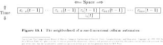
Figure 15.1{kind=link}
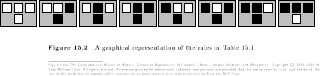
Figure 15.2{kind=link}
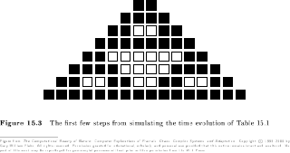
Figure 15.3{kind=link}
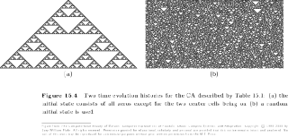
Figure 15.4{kind=link}
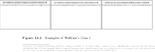
Figure 15.5{kind=link}
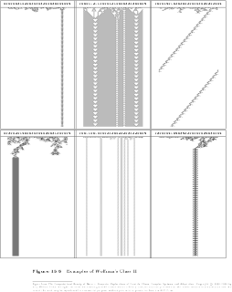
Figure 15.6{kind=link}
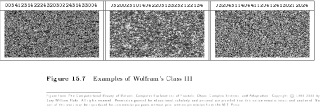
Figure 15.7{kind=link}
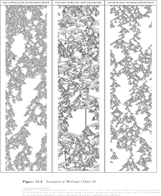
Figure 15.8{kind=link}
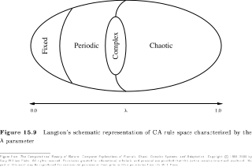
Figure 15.9{kind=link}
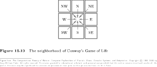
Figure 15.10{kind=link}
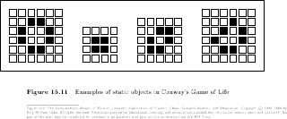
Figure 15.11{kind=link}
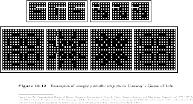
Figure 15.12{kind=link}
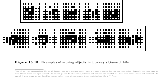
Figure 15.13{kind=link}
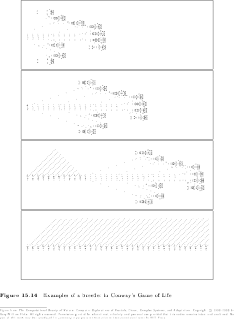
Figure 15.14{kind=link}
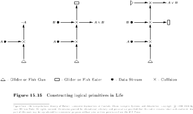
Figure 15.15{kind=link}
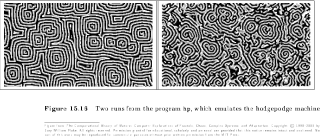
Figure 15.16{kind=link}
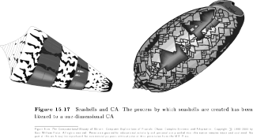
Figure 15.17